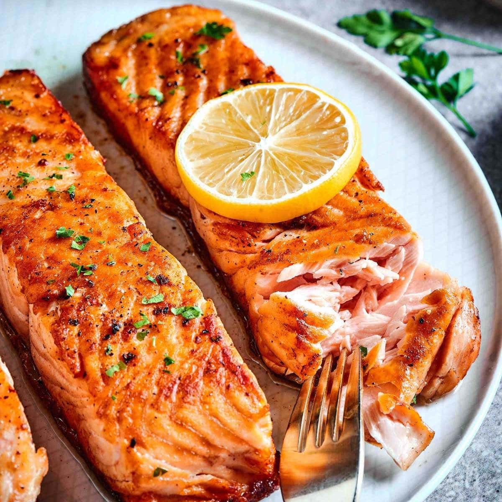

Salmon Rate my recipe : Prep Time : 10mins Cooking Time : 15mins  Salmon fillet is a healthy and delicious choice for any meal. Rich in omega-3 fatty acids, it's good for your heart and tastes great too.-Your Name Ingredients 2 salmon fillet 1 tsp lemon juice 1/4 tsp dill as needed salt 1 tsp pepper As Needed olive oil You currently have in your basket Directions Preheat oven to 400°F (200°C). Line a baking sheet with parchment paper. Place salmon fillets on the prepared baking sheet. Drizzle with olive oil and season with salt and pepper. Spread minced garlic and chopped dill over the fillets. Place lemon slices on top. Bake in the preheated oven for 12-15 minutes, or until salmon is cooked through and flakes easily with a fork. Remove from oven and serve hot. Garnish with additional fresh dill and lemon slices if desired. How did your salmon go? Your Name: Your Comment: Add Comment